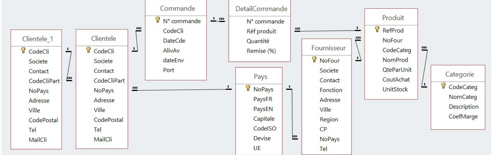

Étape 1 : Etude de la base de données de KDou
Présentation de la base de données de KDou
Un client peut passer plusieurs commandes. Chaque commande concerne 1 ou plusieurs produits. Les produits typiques commercialisés appartiennent à une seule catégorie alimentaire et sont proposés par un seul fournisseur. Quelques caractéristiques :
- KDou a mis en relation des clients ayant une proximité afin d'optimiser les opérations de livraison. Certains clients pilotent un réseau de clients partenaires pour faire des livraisons groupées.
- La gestion des pays de KDou est organisée à partir d'une table des Pays.
- Les produits ont un coût d'achat au fournisseur et par rapport à leur catégorie un coefficient de marge qui prend en compte les paramètres de l'organisation de KDou (coût fournisseur, transport, stockage, …). Le prix de vente au client est donc le coût d'achat * coefficient de marge.
Schéma des relations Access de la BDD KDou

Les tables
| Table | Ce qu'elle contient | Clé primaire |
|---|---|---|
| Clientele | Les clients de KDou | CodeCli |
| Commande | Les commandes des clients | N° commande |
| DetailCommande | Les produits de chaque commande | Aucune (d'où les lignes en double) |
| Produit | Les produits du catalogue | RefProd |
| Categorie | Les catégories et leur coefficient de marge | CodeCateg |
| Fournisseur | Les fournisseurs | NoFour |
| Pays | Les pays et s'ils sont dans l'UE ou pas | NoPays |